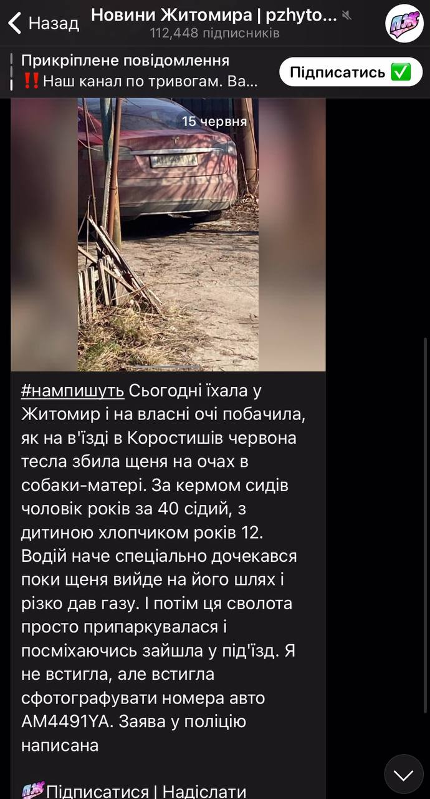

Персональні дані
- ПІБ: Шевчук Вадим Михайлович
- Дата народження: 05 червня 1979
- Проживає: Коростишів, с. Заріччя, вул. Перемоги 21а, кв. 11
- Прописаний: с. Голубівка Коростишівського району Житомирської області, вул. Кошового буд. 5
- Паспорт: ВН 531250, виданий 12 липня 2011 Коростишівським РВ УМВС України
- ІПН: 2901005711
- Сімейний стан: Фіктивне розлучення з Оленою Шевчук. Мають двох неповнолітніх дітей: Дамір Шевчук Вадимович і Тимур Шевчук Вадимович
- Рід діяльності: Шахрайство у особливо великих розмірах, на покупці/продажі автомобілів, в тому числі військовослужбовців. Вимагання, дрібні крадіжки.
Сумарно викрав: понад 50 тис. доларів США, тобто понад 2 млн грн., що цілком підпадає під ст. 190 ч.5 ККУ "Шахрайство, вчинене в особливо великих розмірах або організованою групою".
Останні діяння шахрая Шевчука Вадима з Коростишева
Шевчук Вадим шахрайським шляхом присвоїв кошти сумою близько 20 тис. доларів США, частина з яких була призначена на потреби військових Сил Оборони України, в тому числі на оплату лікування пораненого. Шевчук знав про призначення коштів, але скориставшись довірою привласнив гроші собі. Надалі перестав виходити на зв'язок з другом і уникає його.
Шевчук Вадим таким же шахрайським шляхом присвоїв кошти понад 25 тис. доларів США. Обіцяючи допомогти пригнати авто, бере гроші, а оформляє авто на інших своїх підставних знайомих
Коротко про виродка
Має дві вищі освіти. Служив у міліції м. Коростишева, (у відділі Державної служби по боротьбі з економічною злочинністю (ДСБЕЗ, він же УБЕП)). Під час служби вимагав хабарі, щоб "порішати" справу. Пізніше, був звільнений з міліції по дисциплінарному покаранню, а саме через постійні побої дружини, на що вона неодноразово скаржилась в міліцію за місцем його роботи. Потім викладав у та Житомирському Педагогічному Університеті ім. Івана Франка.
Займається боротьбою джиу-джитсу, приймає участь у змаганнях по Україні. Входить до керівного складу громадської організації "Житомирська федерація з веслування на човнах "Дракон"". Відвідував спортивні заняття у "Спортивному клубі Михайлівському" та Спортивному клубі боксу PLTK. Учасник та Житомирської Обласної Федерації Джиу-Джитсу.
"Віджав" підприємство з обробки граніту (с. Здвижка, Коростишівський район, переглянути на мапі) свого ж тестя. Підприємтсво має назву "VIP Granit Korostyshev", простоює, не працює. Там він зберігає автомобілі, на які надурив людей. Втім, на Google Maps підприємство має відгуки, у яких клієнти стверджують, що Шевчук взяв гроші і не виконав замовлення.
Шевчук Вадим "заробляє" на життя собі і своїм дітям шахрайством і обманом. Дурить людей на покупці гранітної плитки та автомобілів. Схема з авто у цього уєбана така: Пропонує своїм знайомим пригон автомобіля, бере гроші, потім автомобіль виявляється дорожче, або поламаним і потрібні ще гроші на ремонт. Далі пропадає і уникає будь-якого зв'язку. Неодноразові епізоди цього шахрайства свідомо ігноруються поліцією. Поліція ігнорує навіть той факт, що ця сволота обманювала військовослужбовців, теж на покупці авто.
Шевчук співпрацював з Коростишівською бандою, яка має звинувачення у вбивстві військовослужбовця, згвалтуваннях, вимаганнях, тортурах та інших злочинах. У 2021 році злочинці були затримані Службою Безпеки України. Шевчук виконував роль "шістірки", приїжджав забрати гроші у жертв та перевозив ці гроші своїм наставникам.
Восени 2023 року був помічений співробітниками ТЦ у дрібних крадіжках з ТЦ "Олді", вул. Грушевського 5, Житомир. Вкрав свердла. Також, є інформація, що тоді Шевчук продавав наркотики (коноплі) неповнолітнім у спортивних клубах, які він відвідував. У червні 2025 року у телеграм каналі "Новини Житомира | pzhytomyr" було опубліковано пост про те, що Шевчук умисно розчавив цуценя на автомобілі.
У 2023-2024 році Шевчук Вадим Михайлович робив операцію на своєму носі у лікарні міста Коростишів. Операцію він не оплатив і по суті, втік з лікарні.
По останнім даним цей виродок ходить тренуватися у Коростишівський клуб ММА на вулиці Пролетарській 31 (Паперовій 31)
Скріншот посту з телеграм каналу (з невідомих причин пост було видалено з каналу)
Шевчук Вадим має зв'язки з поліцією, (в т.ч. його дружина Олена) тому не боїться відповідальності за свої злочини. Поліція ігнорує численні заяви від жертв Шевчука, які надають докази його шахрайства. Шевчук продовжує обманювати людей, знаючи, що йому нічого не буде.
Шевчук Вадим має двох дітей, які живуть з ним і його колишньою дружиною Оленою Шевчук. Діти не знають, що їх батько - шахрай і злочинець. Вони вважають його добрим батьком, який забезпечує їх усім необхідним. Але насправді він використовує їх для прикриття своїх злочинів.
Шевчук Вадим - це уйобіще, яке не має совісті і честі. Він готовий обманювати і зраджувати своїх друзів, родичів і навіть дітей заради власної вигоди. Він не має жодних моральних принципів і не боїться наслідків своїх дій. Він - справжній аферист, який заслуговує на покарання.
Сайт зроблений для інформування про цього шахрая Шевчука Вадима, щоб застерегти людей від цього афериста уйобка. Сайт є Життєписом для цього уйобка - Шевчука Вадима. Сайт стане також і Некрологом для цього уєбана, і після його смерті його родичі, сім'я, друзі, сусіди, його діти, внуки, правнуки і наступні покоління шахраїв-Шевчуків будуть знати, що їх батько, дід, знайомий, сусід - безпринципна мразота, яка у період війни вирішила нажитись на наших Захисниках та інших людях, які довірились цьому хуєсосу.
Цей сайт житиме вічно, його не заблокують і не видалять ніколи. Сайт буде працювати, мати дзеркала, в тому числі у мережі TOR. Ми знаємо, що ти це читаєш, Вадим, тож знай, сайт залишиться і ти нічого з цим не зробиш. Це лише початок, покарання за твої вчинки обов'язково буде, і стане найгіршим твоїм кошмаром наяву. Усьому свій час..
Інформація буде доповнюватися.